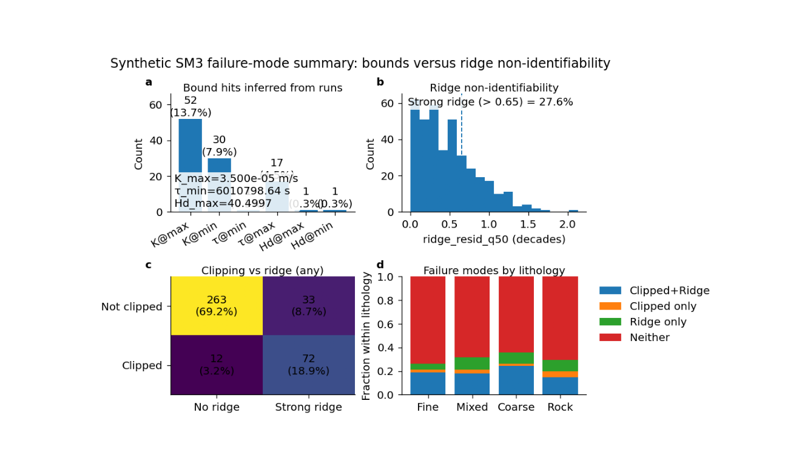

Note
Go to the end to download the full example code.
SM3 bounds versus ridge: learning the two main failure modes#
This example teaches you how to read the GeoPrior SM3 bounds-versus-ridge summary figure.
In Supplementary Methods 3, two failure modes matter a lot:
clipping to bounds
ridge non-identifiability
These are not the same thing.
A run can hit a hard or effective bound without necessarily showing a strong ridge. And a run can show a strong ridge without obviously clipping to a bound. This figure is useful because it puts both failure modes into one compact page.
What the four panels mean#
The plotting backend builds four panels:
bound hits counts and percentages for hits at the inferred extrema of \(K\), \(\tau\), and \(H_d\).
ridge distribution histogram of
ridge_resid_q50together with a threshold marking what the script calls “strong ridge”.clipping versus ridge matrix a 2×2 count table showing: - not clipped / no ridge, - not clipped / strong ridge, - clipped / no ridge, - clipped / strong ridge.
category fractions either overall category fractions or, when
lith_idxis available, stacked fractions by lithology.
Why this matters#
This figure does not ask whether recovery was accurate. It asks why recovery may have failed.
That is a different question.
A model can miss the true parameters because it is pushed to the edge of the feasible region. Or it can miss them because the inverse problem is sliding along a ridge. These two situations require different scientific responses.
This gallery page builds a compact synthetic SM3-style table so the figure is fully executable during documentation builds.
Imports#
We use the real plotting function and its real helper routines from the project script.
from __future__ import annotations
import json
import tempfile
from pathlib import Path
import matplotlib.image as mpimg
import matplotlib.pyplot as plt
import numpy as np
import pandas as pd
from geoprior._scripts.plot_sm3_bounds_ridge_summary import (
compute_flags,
infer_bounds,
plot_sm3_bounds_ridge_summary,
)
Step 1 - Build a compact synthetic SM3 summary table#
The real plotting script needs, at minimum:
K_est_med_mps
tau_est_med_sec
Hd_est_med
ridge_resid_q50
It can also use:
lith_idx
identify
nx
to enrich the summary and filtering logic.
We therefore create a small synthetic table with four lithology groups. The idea is:
some runs will be intentionally clipped at extrema,
some runs will have strong ridge residuals,
some will suffer both,
and some will show neither failure mode.
rng = np.random.default_rng(123)
n_per_lith = 95
# Synthetic extrema that some runs will hit exactly.
K_MIN = 8.0e-8
K_MAX = 3.5e-5
TAU_MIN = 8.0e6
TAU_MAX = 7.5e8
HD_MIN = 10.0
HD_MAX = 34.0
lith_cfg = {
0: {"name": "Fine", "K0": 3.0e-7, "tau0": 1.8e8, "Hd0": 28.0},
1: {"name": "Mixed", "K0": 8.0e-7, "tau0": 9.5e7, "Hd0": 24.0},
2: {"name": "Coarse", "K0": 2.4e-6, "tau0": 3.8e7, "Hd0": 18.0},
3: {"name": "Rock", "K0": 8.0e-6, "tau0": 1.5e7, "Hd0": 13.0},
}
rows: list[dict[str, float | int | str]] = []
for lith_idx, cfg0 in lith_cfg.items():
for _ in range(n_per_lith):
# Latent ridge coordinate.
u = rng.normal(0.0, 1.0)
# Start from a lithology-specific center.
K_est = cfg0["K0"] * (10.0 ** rng.normal(0.0, 0.18))
tau_est = cfg0["tau0"] * (10.0 ** rng.normal(0.0, 0.16))
Hd_est = cfg0["Hd0"] * (10.0 ** rng.normal(0.0, 0.07))
# Ridge residual magnitude.
ridge_resid_q50 = abs(
0.55 * u + rng.normal(0.0, 0.18)
)
# Controlled clipping rules to create all four categories.
if u > 1.2:
K_est = K_MAX
elif u < -1.5:
K_est = K_MIN
if u > 0.9:
tau_est = TAU_MIN
elif u < -1.8:
tau_est = TAU_MAX
if u > 1.6:
Hd_est = HD_MAX
elif u < -2.0:
Hd_est = HD_MIN
rows.append(
{
"identify": "both",
"nx": 21,
"lith_idx": int(lith_idx),
"K_est_med_mps": float(K_est),
"tau_est_med_sec": float(tau_est),
"Hd_est_med": float(Hd_est),
"ridge_resid_q50": float(ridge_resid_q50),
}
)
df = pd.DataFrame(rows)
print("Synthetic SM3 summary table")
print(df.head().to_string(index=False))
Synthetic SM3 summary table
identify nx lith_idx K_est_med_mps tau_est_med_sec Hd_est_med ridge_resid_q50
both 21 0 2.575845e-07 2.892947e+08 28.889248 0.378375
both 21 0 2.304400e-07 2.197783e+08 26.607027 0.259377
both 21 0 1.593873e-07 2.792667e+08 25.129379 0.233491
both 21 0 5.660922e-07 1.411489e+08 26.627623 0.135775
both 21 0 8.000000e-08 7.500000e+08 10.000000 1.078251
Step 2 - Infer the bounds exactly the same way as the script#
The figure does not take external bounds as inputs. Instead, it infers them from the observed extrema in the table itself.
This is important because “clipped” here means:
equal to the minimum or maximum values present in the runs,
not equal to some unrelated theoretical limit.
bounds = infer_bounds(df)
print("")
print("Inferred bounds")
print(f" K_min = {bounds.K_min:.3e}")
print(f" K_max = {bounds.K_max:.3e}")
print(f" tau_min = {bounds.tau_min:.3e}")
print(f" tau_max = {bounds.tau_max:.3e}")
print(f" Hd_min = {bounds.Hd_min:.3f}")
print(f" Hd_max = {bounds.Hd_max:.3f}")
Inferred bounds
K_min = 8.000e-08
K_max = 3.500e-05
tau_min = 6.011e+06
tau_max = 7.500e+08
Hd_min = 8.636
Hd_max = 40.500
Step 3 - Compute clipping and ridge flags#
The real helper builds six primitive clipping flags plus two combined categories:
clipped_primary
clipped_any
and one ridge flag:
ridge_strong = ridge_resid_q50 > ridge_thr
For the lesson, we use the more inclusive “any” clipping mode.
ridge_thr = 0.65
flags = compute_flags(
df,
bounds,
rtol=1e-9,
ridge_thr=ridge_thr,
)
print("")
print("Basic counts")
print(f" clipped_any = {int(flags['clipped_any'].sum())}")
print(f" clipped_primary = {int(flags['clipped_primary'].sum())}")
print(f" ridge_strong = {int(flags['ridge_strong'].sum())}")
Basic counts
clipped_any = 84
clipped_primary = 54
ridge_strong = 105
Step 4 - Render the real summary figure#
We now call the real plotting backend.
This script really does accept:
show_legend
show_labels
show_ticklabels
show_title
show_panel_titles
show_panel_labels
paper_format
so we pass only those valid arguments.
tmp_dir = Path(
tempfile.mkdtemp(prefix="gp_sg_sm3_bounds_")
)
out_base = tmp_dir / "sm3_bounds_ridge_gallery"
out_json = tmp_dir / "sm3_bounds_ridge_gallery.json"
out_csv = tmp_dir / "sm3_bounds_ridge_categories.csv"
plot_sm3_bounds_ridge_summary(
df,
flags=flags,
bounds=bounds,
ridge_thr=ridge_thr,
use="any",
out=str(out_base),
out_json=str(out_json),
out_csv=str(out_csv),
dpi=160,
font=9,
show_legend=True,
show_labels=True,
show_ticklabels=True,
show_title=True,
show_panel_titles=True,
show_panel_labels=True,
paper_format=False,
title=(
"Synthetic SM3 failure-mode summary: "
"bounds versus ridge non-identifiability"
),
)
[OK] wrote C:\Users\Daniel\AppData\Local\Temp\gp_sg_sm3_bounds_y3gwbs4p\sm3_bounds_ridge_gallery (eps,pdf,png,svg)
[OK] wrote C:\Users\Daniel\AppData\Local\Temp\gp_sg_sm3_bounds_y3gwbs4p\sm3_bounds_ridge_categories.csv
[OK] wrote C:\Users\Daniel\AppData\Local\Temp\gp_sg_sm3_bounds_y3gwbs4p\sm3_bounds_ridge_gallery.json
Step 5 - Show the PNG produced by the backend#
For the gallery page, we surface the PNG result directly.
img = mpimg.imread(str(out_base) + ".png")
fig, ax = plt.subplots(figsize=(8.2, 4.8))
ax.imshow(img)
ax.axis("off")

(np.float64(-0.5), np.float64(1144.5), np.float64(664.5), np.float64(-0.5))
Step 6 - Read the exported category table#
The script exports a category table that records counts and fractions for:
overall categories
lithology-specific categories
and for both clipping definitions:
primary
any
cat_df = pd.read_csv(out_csv)
print("")
print("Category table preview")
print(cat_df.head(12).to_string(index=False))
Category table preview
use group lith_idx lithology category count denom frac
primary overall -1 overall Clipped+Ridge 44 380 0.115789
primary overall -1 overall Clipped only 10 380 0.026316
primary overall -1 overall Ridge only 61 380 0.160526
primary overall -1 overall Neither 265 380 0.697368
primary lithology 0 Fine Clipped+Ridge 12 95 0.126316
primary lithology 0 Fine Clipped only 2 95 0.021053
primary lithology 0 Fine Ridge only 11 95 0.115789
primary lithology 0 Fine Neither 70 95 0.736842
primary lithology 1 Mixed Clipped+Ridge 8 95 0.084211
primary lithology 1 Mixed Clipped only 3 95 0.031579
primary lithology 1 Mixed Ridge only 19 95 0.200000
primary lithology 1 Mixed Neither 65 95 0.684211
Step 7 - Read the exported JSON summary#
The JSON export records the inferred bounds and the count summaries for the primary and any clipping definitions.
JSON summary keys
['bounds_inferred', 'category_csv', 'csv', 'ridge_thr', 'summary_any', 'summary_primary']
Summary (any clipping)
{
"both": 72,
"both_frac": 0.18947368421052632,
"clipped": 84,
"clipped_frac": 0.22105263157894736,
"clipped_only": 12,
"clipped_only_frac": 0.031578947368421054,
"n": 380,
"neither": 263,
"neither_frac": 0.6921052631578948,
"ridge_only": 33,
"ridge_only_frac": 0.0868421052631579,
"ridge_strong": 105,
"ridge_strong_frac": 0.27631578947368424
}
Step 8 - Learn how to read panel (a)#
Panel (a) is the bound-hit summary.
Each bar answers:
how many runs sat exactly at the inferred minimum or maximum,
and what fraction of all runs that count represents.
This panel is useful because clipping is often invisible if you only inspect scatter plots. A fitted value on the boundary can look innocent unless you count how often it happens.
If one bar is very large, it usually means the optimization is pushing that parameter to the edge of the explored feasible space.
Step 9 - Learn how to read panel (b)#
Panel (b) shows the distribution of ridge residuals.
The dashed line is the threshold used to define:
strong ridge
If many runs lie to the right of that line, the model family is telling you that a substantial portion of the experiment space suffers from non-identifiability along the ridge direction.
This panel is therefore not about “good” or “bad” runs in the ordinary predictive sense. It is about whether the inverse problem remains structurally ambiguous.
Step 10 - Learn how to read panel (c)#
Panel (c) is the most diagnostic panel on the page.
It cross-tabulates the two failure modes:
clipped vs not clipped
strong ridge vs no strong ridge
This is important because it tells you whether the two failure modes are mostly separate or mostly overlapping.
A useful interpretation pattern is:
top-left: no clipping and no strong ridge -> the safest region
top-right: no clipping but strong ridge -> not boundary-driven, but still weakly identifiable
bottom-left: clipped without strong ridge -> a boundary problem more than a ridge problem
bottom-right: clipped and strong ridge -> the most problematic regime
Step 11 - Learn how to read panel (d)#
Panel (d) summarizes the fractions of the four categories.
If lith_idx is absent, the panel shows one overall fraction
bar for each category.
If lith_idx is present, as in this lesson, the panel becomes
more informative: it shows stacked fractions within each
lithology.
That helps answer:
which lithologies are more vulnerable to clipping?
which lithologies are more prone to ridge ambiguity?
and whether the dominant failure mode changes by material type.
Step 12 - Practical takeaway#
This figure is useful because it separates two distinct reasons for poor identifiability:
pushing into bounds,
sliding along a ridge.
Those are different scientific problems and usually call for different remedies.
For example:
heavy clipping suggests revisiting bounds, priors, or search ranges,
strong ridge behaviour suggests revisiting the closure design, the experiment structure, or the identifiability regime.
That is why this figure belongs next to the main SM3 identifiability figure: together they explain both recovery and failure mode.
Command-line version#
The same figure can be produced from the command line.
The real script supports:
--csvfor the SM3 runs summary table,optional filtering through
--only-identifyand--nx-min,--usewithanyorprimary,--ridge-thrand--rtol,--paper-format,--out-jsonand--out-csv,and the shared plotting text options, including
--show-panel-labelsfor this specific script.
Legacy dispatcher:
python -m scripts plot-sm3-bounds-ridge-summary \
--csv results/sm3_synth_1d/sm3_synth_runs.csv \
--use any \
--ridge-thr 2.0 \
--out sm3-clip-vs-ridge
Restrict to one identify mode:
python -m scripts plot-sm3-bounds-ridge-summary \
--csv results/sm3_synth_1d/sm3_synth_runs.csv \
--only-identify both \
--nx-min 21 \
--use primary \
--paper-format \
--out sm3-clip-vs-ridge-both
Modern CLI:
geoprior plot sm3-bounds-ridge-summary \
--csv results/sm3_synth_1d/sm3_synth_runs.csv \
--use any \
--out sm3-clip-vs-ridge
The gallery page teaches the figure. The command line reproduces it in a workflow.
Total running time of the script: (0 minutes 14.322 seconds)